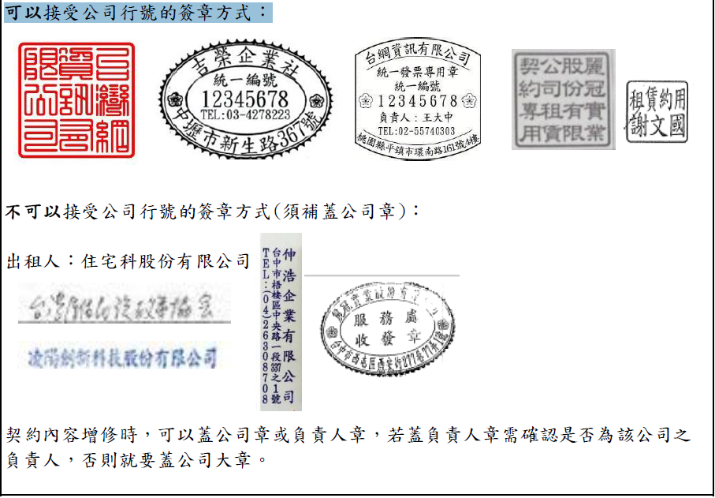

| 租賃契約書 | |
|---|---|
| 問題 | 認定方式 |
| 租約檢附頁面 |
應檢附整份租賃契約書（首頁、末頁）可以省略封面、中間條款、封底、付款明細表。 |
| 出租人 | |
|---|---|
| 問題 | 認定方式 |
| 原出租人未簽名已補簽 | 因簽名已有效力，首末頁可不需在另外雙方簽章。 |
| 出租人欄位更換出租人 | 因簽名已有效力，首末頁可不需在另外雙方簽章。 |
| 出租人欄位只有代理人簽章 |
契約出租人簽訂只有出租代理人視為契約書無出租人，須補正出租人（房東）簽名 因簽名已有效力，首末頁可不需在另外雙方簽章。 |
| 電腦打字租約是否要有雙方簽章 | 首末頁其中一頁有出承租人雙方簽章即可。 |
| 出租人及承租人印章除了木頭章，是否可接受原子章、連續章 | 只要修改處有雙方簽章即可，不限制印章類別，也接受出租人及承租人手印。 |
| 承租人 | |
|---|---|
| 問題 | 認定方式 |
| 承租人未簽名或修改新增 | 只需出租人簽名或蓋章。 |
| 承租人及出租人簽名欄位相反時，該如何審認 |
EX1:
出租人：新之助 承租人：娜娜子 => 名字劃掉 變成出租人：娜娜子 承租人：新之助，不需另外雙方簽章 EX2: 出租人：新之助 承租人：娜娜子 =>劃掉變更為 承租人：新之助 出租人：娜娜子，需另外雙方簽章 EX3: 乙方保證人：新之助 =>保證人劃掉變更為 承租人：新之助，需雙方簽章 |
| 承租人非申請人認定方式 |
1、契約承租人為申請人戶籍內直系親屬：建檔時需通知補件變更申請書之申請人或更正契約承租人為申請人。 2、契約承租人與申請人非直系關係或戶籍外直系親屬：依規定需初審退件。※可參閱租金補貼作業執行要點第18點 |
| 租賃地址 | |
|---|---|
| 問題 | 認定方式 |
| 原地址未填寫，承租人已補寫 | 須承租人及出租人雙方簽名或蓋章。 |
| 租賃地址有塗改 | 須承租人及出租人雙方簽名或蓋章。 |
| 租賃地址未填寫行政區 |
1、補寫行政區後承租人及出租人雙方簽名或蓋章。 2、行政區可以接受填寫郵遞區號。 3、行政區寫成臺中縣時的寫法，可不需補正(如：太平市、大里市) 4、行政區是否補正認定： (1)不管是否獨有的行政區，只要有出具第一類建物謄本或建物所有權狀(只有房東可出具之證明文件)，可以不須補正。 (2)非獨有行政區，也無出具以上房東之證明文件，需通知補正行政區，審查期未補正則逾退處理。 (3)若該路名唯獨只有台中有的行政區，可不須補正。 |
| 租賃地址未填寫縣市（臺中市） |
需依行政區做判別，若行政區為該縣市獨有的行政區可不需補正縣市(臺中市)但行政區在其他縣市有重複的，就需補上縣市(臺中市) 例如：東區、北區臺中市有及台南市也有，就需請申請人補正並出租人及承租人雙方蓋章。 |
| 租賃地址樓層未填寫 |
1、透天厝建物可以不須補正樓層視為承租整棟。 2、審查時若遇租賃地址為頂樓加蓋，先以退件處理，若申請人主張因避開4樓諧音時
3、租賃地址有載明房號(如：102室、305房)須請申請人填寫樓層，並雙方簽章。 4、租賃地為4層樓以下之違建需直接退件，因無4樓諧音疑慮。 例如：建物最高2層，租地為3樓、建物最高3層，租地為4樓，以上皆以初審退件辦理。 |
| 不同申請案租賃地址重複處理方式 |
1、相同地址需載明房號(只要是非直系親屬就算載明相同房號也可以)，事後補正房號需承租人及出租人雙方簽名或蓋章
2、審查期間相同地址需通知補正房號，核定前需計算人數是否符合基本居住水準，此項未補正不會逾退。 3、兩案承租相同地址，其中A案申請人切結表示無與他人分租，在審查期間因A案有表示
※注意！非直系親屬相同地址需載明房號，直系親屬相同地址須擇一申請。 |
| 租賃地址可與不可接受的寫法 |
(1) 臺中市南屯區保安六街110號五樓之5(建謄)
(2)台中市中區21-9-7(建謄)
臺中市南屯區公益路二段615之1號12樓之15(建謄)
台中市南屯區保安五街60號3F之2(建謄)
臺中市太平區育賢路258號10樓之11(建謄)
臺中市大肚區遊園路一段70巷1弄22之1號(建謄)
※因考慮門牌寫法非依建謄順序標記，若地政登記地址與戶籍地址相同，但寫法不同，租賃契約書符合其中一個寫法即可。 |
| 同一個門牌地址契約改成不同樓層或同層不同房號(同出租人、同所有權人) | 不同樓層視為搬家，需檢附搬家資料。同樓層不同房號則免附其他文件，原契約修改房號須雙方簽章。 |
| 同一份租賃契約承租兩個租賃地址處理方式 | 同份契約載明承租兩地時，須請申請人在原契約書或另外一張紙切結說明
要依哪個地址提出申請，並註名該申請地址租金金額為多少元，承租人及出租人雙方需簽章。 |
| 租賃日期 | |
|---|---|
| 問題 | 認定方式 |
| 租賃日期新增或塗改 | 須承租人及出租人雙方簽名或蓋章。 |
| 租賃日期為未來日可以認定之期限 |
第一次受理：起租日每年12月1日 / 第二次受理：起租日每年5月1日 申請時檢附未來租約若租期超過12月1日，仍須開補正單通知申請人須補現行租約 且需電洽民眾第1期(1/20)無法收到款項，此租約情形不列入逾期未補正退件。 補貼期間：租約到期3個月內須補正，若檢附未來租約，依屆滿期起開始算3個月內。 |
| 租賃日期期限不得於20年 |
租賃契約租期超過20年，系統自動登打至20年期限，不須更正契約書。 依據民法449條規定「租賃契約之期限，不得逾二十年。逾二十年者，縮短為二十年。前項期限，當事人得更新之。 |
| 租賃期限寫法放寬認定 |
1、日的天數大於該月可以無需補正
2、2月份因有閏月，若該年只有28天但契約填寫111年2月29日，則自動認定為28日，無須補正
若該年為閏月，契約寫113年2月28日則續約租約須從113年2月28日或113年2月29日開始簽訂才算接續
|
| 公證租約 | |
|---|---|
| 問題 | 認定方式 |
| 租賃契約書已經可判定出是有公證版本，是否需補正完整公證書 | 租賃契約書與公證書都須檢附整份文件。 |
| 公證過之租賃契約，地址、租期、金額有新增或修正該如何審認 |
公證過的租賃契約書內容有修正情形，為出租人與承租人雙方合意修改，依契約內容來看是有效的
範例：110年8月2日申請人提出申請，檢附租期1100101~1101231完整租賃契約書及公證書，申請時是可以加公證契約分數 但核定後出租人及承租人雙方在原契約續約，並未經第三方公證，因已過審查期評分故分數不變動，契約延長為雙方合意，故可以認定並繼續撥款。 |
| 續約租約 | |
|---|---|
| 問題 | 認定方式 |
| 在原契約填寫雙方同意續約至O年O月O日該如何審認 | 申請人續約字樣可以在原契約書內容(首頁、末頁、條款)載明雙方續約起訖日期，且出租人及承租人雙方都須簽章，需檢附整份契約書。 |
| 在原租賃契約以外的紙張寫上雙方協議續約日期，該如何審認 |
紙張抬頭必須是租賃契約書或租賃續約書等明確是租賃相關契約(不可為借住契約書等...)
※例外：若另一張續約租約上有載明【契約條件依原契約，雙方均無異議】等字樣
|
| 續約在原租約的支付款明細欄續約，是否審認 |
需有完整載明出租人及承租人簽章、出租人及承租人身分證字號、租賃地址、續約期間、租金金額，可以不用檢附原契約書。 |
| 在原租約有效情況下，租約條款內容有提到租期屆滿後續約之日期該如何認定 |
主要租期以契約書之租賃期間認定，若條款內容提到續約情形需判定條款內容，須依個案處理(遇到可以拿出來提問) 範例：租期屆滿，雙方仍願繼續租賃時，得另訂書面契約或以本契約約定展延租期至O年O月O日…… 以上範例因有提到雙方仍願意之情下續約，則須加蓋雙方章才可以認定續約內容。 |
| 租金金額 | |
|---|---|
| 問題 | 認定方式 |
| 租金金額新增或塗改 | 須承租人及出租人雙方簽名或蓋章。 |
| 租金金額若為壹萬貳、八千五等寫法，是否須補"仟"或"佰" |
租金金額寫法為口語化時，需填寫完整，並雙方簽章。 範例：壹萬貳元→須改為壹萬貳"仟"元、八千五元→須改為八千五"佰"元 ※此項未補正可於核定後三個月內補正，A系統要先掛補件，不逾期退件。 |
| 租金金額寫半年為多少元，除以月份無法整除該如何認定 |
租金金額需換算每月金額為多少，若無法整除時以四捨五入做計算。 範例：半年租金25000元，除以6個月每月4,166.666......，四捨五入依4167元認定若租約填寫每學期租金時，須補正每月各是多少元。 |
| 搬家或續約後租金金額超過上限3萬5,000元，如何處理 |
受領期間因搬家或續約租金超過上限，先判定是否超過補件3個月內 若未超過時間可以讓申請人再次補正是否另搬致低於租金上限之住宅；若已不符規定需銷戶處理，有溢領情形需追繳溢領。 |
| 出租人身分證字號 | |
|---|---|
| 問題 | 認定方式 |
| 出租人身份證字號修改或新增 | 只需出租人簽名或蓋章，若出租人為公司行號於契約補登統一編號可不須加蓋章。因要確認出租人身分證字號之正確性。 |
| 出租人身分證字號可以接受的補正文件 |
出租人身分證影本。 建物所有權狀或第一類建物謄本。 |
| 出租人身分證字號檢核碼錯誤認定方式 |
出租人身分證證或統一編號為必備項目，若出租人身分證未填寫或系統判定檢核錯誤，需通知補正，限期未補正則逾期退件。 受領期間因搬家出租人身分證字號未填寫或檢核碼錯誤，應通知補正並停撥。 |
| 承租人身分證字號 | |
|---|---|
| 問題 | 認定方式 |
| 承租人身份證字號修改或新增 | 只需承租人簽名或蓋章。 |
| 其他 | |
|---|---|
| 問題 | 認定方式 |
| 出租代理人修正契約內容該如何審認 |
原契約有出租人及出租代理人，事後租約續約或修改，不可以由出租代理人認定簽章
必須由出租人及承租人雙方認定簽章，除非有檢附授權書說明授權範圍是否包含契約續約、修改等範圍，才可以認定。 |
| 依110年度新規定，「租賃契約所載出租人非所有權人者主管機關得通知限期檢附所有權人同意證明文件」
遇到出租人非所有權人是否補正所有權人同意書 |
出租人非所有權人時，不須補正所有權人同意書，但若有特殊個案須請承辦或股長認定是否要補正此文件。 |
| 出租人為公司行號時的認定方式 |  |